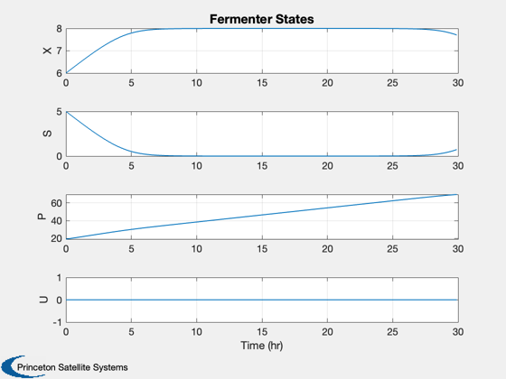

Continuous Fermenter with I/O Linearizing Control
Simulates a model of a continuous fermenter with an I/O linearizing control.
------------------------------------------------------------------------- Reference: Henson, M. A. and D. E. Seborg. (1997.) Nonlinear Process Control, Prentice-Hall. pp. 203-204. ------------------------------------------------------------------------- See also: RHSFermenter, MuFermenter, TimeGUI, Plot2D -------------------------------------------------------------------------
Contents
%-------------------------------------------------------------------------- % Copyright (c) 2013 Princeton Satellite Systems, Inc. % All rights reserved. %-------------------------------------------------------------------------- % Since version 1. %--------------------------------------------------------------------------
Model parameters
-----------------
d.yXS = 0.4; % Cell-mass yield parameter (g/g) d.beta = 0.2; % Yield parameter (1/hr) d.pM = 50; % Constant parameter (g/L) d.kI = 22; % Constant parameter (g/L) d.d = 0.202; % Dilution rate (1/hr) d.alpha = 2.2; % Yield parameter (g/g) d.muM = 0.48; % Maximum specific growth rate (1/hr) d.kM = 1.2; % Constant parameter (g/L) d.sF = 20; % Feed substrate concentration (g/L)
State
[X;S;P] X = biomass concentration S = substrate concentration P = product concentration ---------------------------
x = [6;5;19.14]; t = 0;
Test
-----
d.muM = 0.875*d.d;
Controller
-----------
epsilon = 1; ySP = x(1); dYInt = 0; v = 0; controllerOn = 0;
The control sampling period and the simulation integration time step
---------------------------------------------------------------------
dT = 0.1;
Number of sim steps
--------------------
nSim = 300; tEnd = nSim*dT;
Plotting arrays
----------------
tPlot = zeros(1,nSim); xPlot = zeros(4,nSim);
Run the simulation
See RHSFermenter.m which gives a model of a constant volume reactor in which a single, rate limiting substrate promotes biomass growth and product formation. -------------------------------------------------------------------------
for k = 1:nSim % Controller %----------- if( controllerOn ) dY = ySP - x(1); v = (2/epsilon)*dY + dYInt/epsilon^2; dYInt = dYInt + dT*dY; % Effectively this cancels the nonlinear term %-------------------------------------------- u = (v - MuFermenter( x, d )*x(1) )/(-x(1)); else u = 0; end d.d = u; % Plotting %--------- xPlot(:,k) = [x;u]; tPlot(k) = t; x = RK4( 'RHSFermenter', x, dT, t, d ); t = t + dT; end
Plot results
%-------------- j = 1:k; Plot2D( tPlot, xPlot,'Time (hr)',['X';'S';'P';'U'],'Fermenter States') %-------------------------------------- % $Id: fc4db3a7e7f0133b892ebd000b5d61bf9428bfa6 $